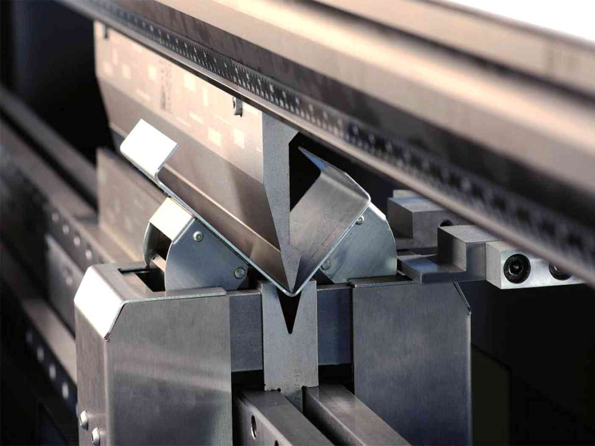

Set Service Group предлагает услугу шлифовальных работ в Санкт-Петербурге. Современное оборудование и опытные специалисты обеспечат качественное выполнение любого заказа.
Шлифование (наружное, плоское, внутреннее шлифование, полировка) - это финишная обработка деталей конструкции до придания её поверхности гладкости под действием абразивных средств. Шлифовка производится для обеспечения требований к шероховатости поверхности изделия, это важно не только для эстетического вида, но и для увеличения КПД различных электротехнических приборов в различных средах в том числе и в вакууме.
Гибка листов
Гибка профиля
Вальцовка
Обработка металлических листов на высокоточном оборудовании, придающем им различные объемные формы, называется гибкой листового металла. Механическая гибка металла имеет ряд тонкостей, например, важно не только придать форму в точности соответствующую заданным параметрам, но при этом не повредить поверхность тонкого листа и не потерять его первоначальных технических характеристик. Бережное механическое воздействие на тонкую поверхность стальных листов считается прогрессивным методом производства. Для этого необходимо использовать специальное оборудование и иметь определенную квалификацию.
Точность производства минимизирует процент выбраковки готовых изделий и позволяет добиться необходимой конфигурации изделия. Весь процесс гибки стальных листов происходит без использования химических веществ и температурного воздействия, что позволяет сохранить все качественные характеристики исходного материала.
Set Service Group предлагает услугу гибки листового металла на заказ. Процесс проходит в несколько этапов. Сначала исходный материал раскраивается в заготовки на линии продольно-поперечной резки, после происходит формовка изделий на специализированном гибочном стане. Основной особенностью нашего оборудования является сам процесс гибки. Гибка листа производится не путем давления пресса с использованием пресс форм, а при помощи поворотных балок. Данный метод позволяет изготавливать изделя практически любой геометрии. Последним этапом является процесс сверки полученного изделия на соответствие техническому заданию. При необходимости выполняется нанесение защитного покрытия или покраска изделий.
Наши специалисты готовы изготовить для вас продукцию любых форм и размеров по разумной цене. Мы производим фасонные и отделочные элементы как стандартных, так и нестандартных размеров по персональным эскизам заказчиков.
Для фасонных элементов наша компания предоставляет собственный сырьевой материал. Толщина металлического листа для такого типа изделий не превышает 2 мм, длина достигает 6000 мм.
Технические возможности по листовой гибке:
- максимальная длина гиба – 3000 мм.
- максимальная толщина металла:Конструкционная сталь - до 8 мм; Нержавеющая сталь – до 4,0 мм; Алюминий – до 6,0 мм;
- максимальное усилие – 63 т.
Более подробную информацию об оборудовании, на котором производится гибка, можно посмотреть ниже.
Для заказа гибки стальных листов вы всегда можете обратиться в Set Service Group, позвонив по телефону 8 (812) 627-15-16 или обратиться с вопросом заполнив форму для связи
При выполнении работ важен такой показатель, как гибка профиля по радиусу. Какой радиус гибки возможен для заготовки, зависит от толщины ее стенок.
Если заказчику требуется гибка алюминиевого профиля, оптимальным для изгиба считается прокат с толщиной стенки 2-4 мм.
Гибка труб и профилей – достаточно обширная услуга. Она предполагает работу:
- с профильными трубами,
- швеллерами,
- двутаврами,
- таврами,
- квадратами,
- прутками,
- кругами,
- полосами и другими изделиями, относящимися к профильным.
Перед началом работы ролики станка и поверхность заготовки обрабатывают маслом, чтобы свести к минимуму трение поверхностей. Любая разновидность гибки, в том числе и гибка П-образного профиля, требует предварительной подготовки, даже если проводится на станке. Когда профиль имеет пустоты, полые места прокладываются песком. Это помогает предотвратить растрескивание и образование складок.
Гнутые профили востребованы во многих отраслях. Гибка профиля в СПб применяется для создания оконных и дверных конструкций, для оформления фасадов. В изготовлении душевых кабин, рекламных сооружений и элементов дизайна часто бывает необходима гибка алюминиевого профиля.
Сегодня у заказчиков востребована трехмерная гибка профилей, позволяющая получить изделия, изогнутые не в одной, а в трех плоскостях. Эту операцию производят на трехмерном гибочном станке, оснащенном ЧПУ. Такая гибка металлического профиля отличается высокой точностью. С помощью нее можно получить гнутый прокат любых форм. Например, в машиностроении трехмерная технология гибки используется для создания кузовов и кабин.
Технические возможности по гибке профиля:
- круглый профиль - диаметром до 57 мм с минимальным радиусом гиба до 240 мм,
-
квадратный и прямоугольный профиль - шириной стенки до 80 мм с минимальным радиусом гиба до 320 мм.
Для заказа гибки металлического профиля вы всегда можете обратиться в Set Service Group, позвонив по телефону 8 (812) 627-15-16 или обратиться с вопросом заполнив форму для связи.
Вальцовка металла (его также называют «вальцевание») — это способ гибки листового проката в радиальном или линейном направлении. Вальцовка листа по радиусу происходит с помощью специальных валов, через которые и осуществляется прокат. Так получаются готовые изделия и детали.
Вальцовка является наиболее простым способом изготовления металлических труб и других предметов путем гибки листового металла. Принцип действия технологии вальцевания весьма прост – металлические листы загружаются в вальцовочный станок, где они скручиваются под воздействием давления. В результате, такая холодная гибка металла способна быстро превратить листовой металл в округлый цилиндр (трубу). Вальцовка листового металла — самый простой способ получить трубу нужного диаметра.
Метод вальцевания также используется для гибки труб, профильных труб и гибки швеллера. Гибка труб, листового металла и швеллера – это чрезвычайно востребованная технология, имеющая большое значение для некоторых отраслей промышленности и строительства. В строительстве пользуется большой популярностью гибка профильной трубы и листового металла. Согнуть трубу можно несколькими способами. Многие используют для сгиба трубы подручные инструменты, хотя качественно согнуть трубу условиях невозможно. Идеально согнуть трубу возможно используя технологию вальцевания (гибка труб в холодном состоянии. Этим способом согнуть трубы гораздо проще, чем каким бы то ни было.
Вальцовка позволяет изготовить как отдельные, самодостаточные детали (гибка трубы), так и элементы более сложных металлоконструкций (например: согнуть трубу, согнуть швеллер или осуществить холодную гибку металла для монтажа производственного помещения).
Для заказа вальцовки вы всегда можете обратиться в Set Service Group, позвонив по телефону 8 (812) 627-15-16 или обратиться с вопросом заполнив форму для связи.